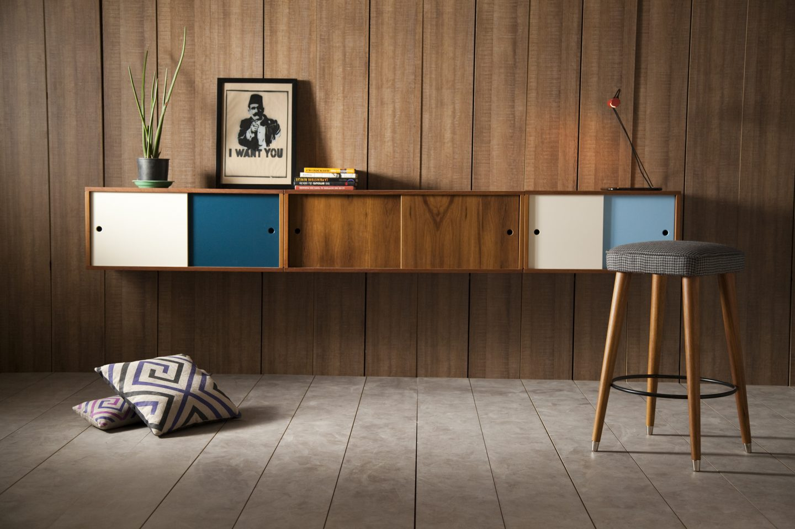
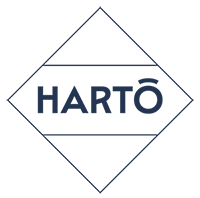
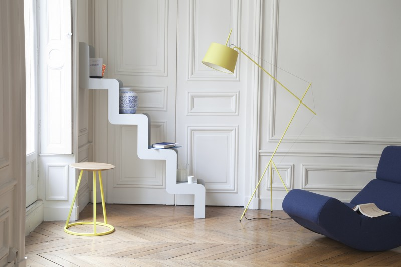
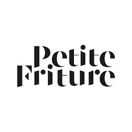
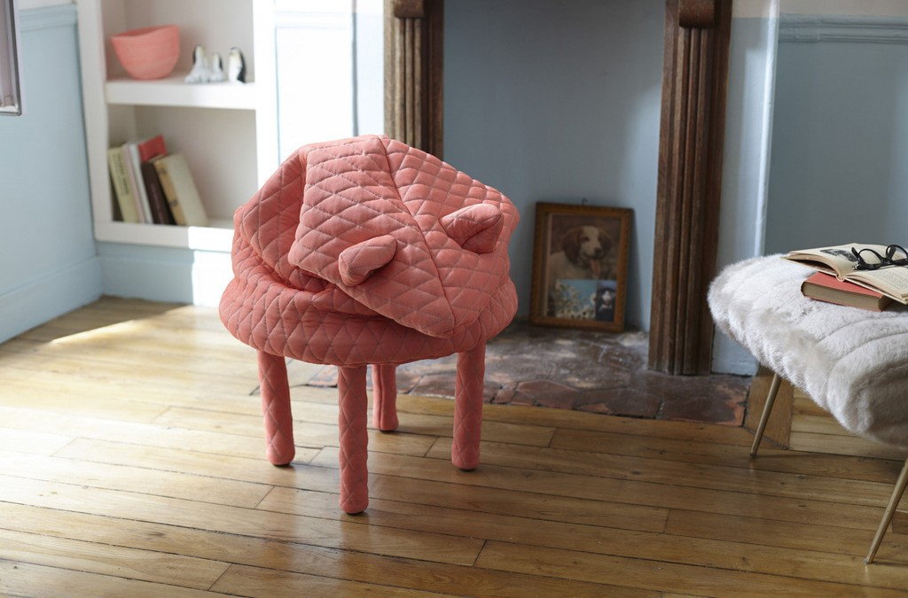
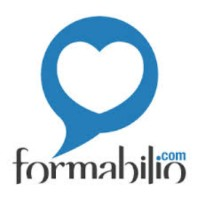
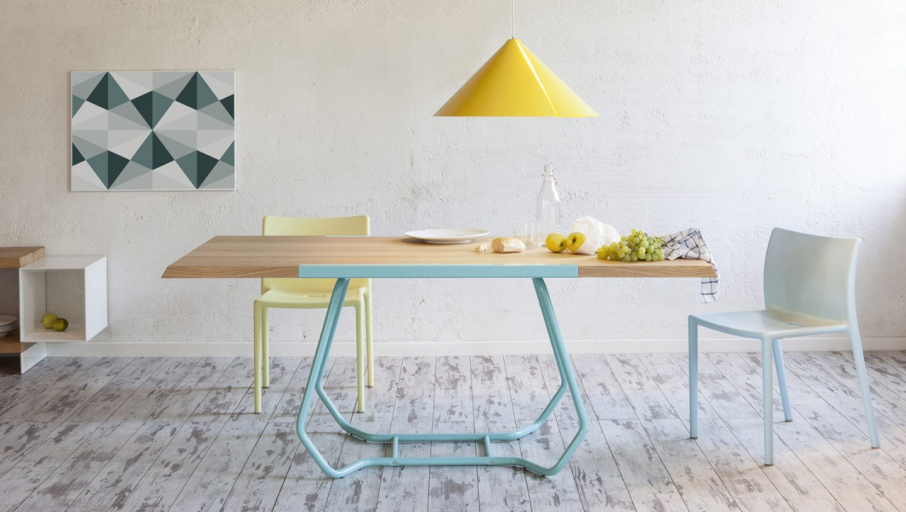
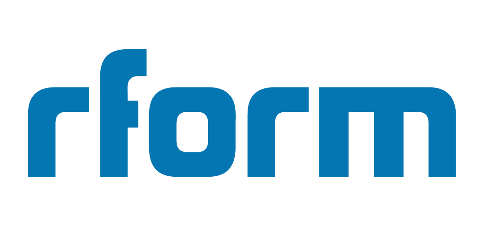
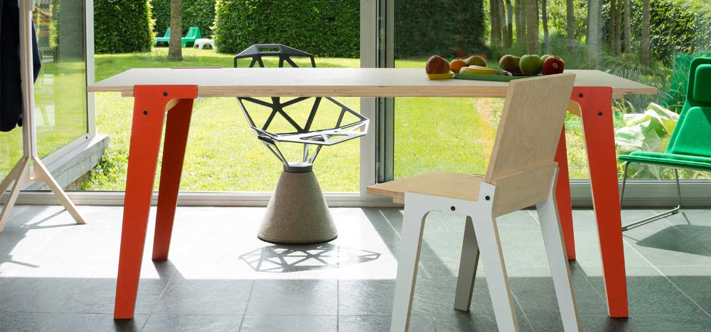

| Numéro | Nom de marque | Description | Images des créations | Localisation |
|---|---|---|---|---|
| 1 | Kann Design |
Mobilier d'inspiration fifties. |  | |
| 2 |  HARTÔ |
Le mariage réussi des lignes épurées et de l’impertinence des touches colorées. |  | |
| 3 |  Petit Friture |
Créé en 2009 pour promouvoir des designers émergents au travers d’objets déco, luminaires et petits meubles, Petite Fritureapporte de belles vibrations à la maison. |  | |
| 4 |  Formabilio |
Formabilio est un éditeur et distributeur italien de mobilier qui invite le publique à participer au processus de sélection des futures créations. |  | |
| 5 |  rform |
Création du mobilier fun, coloré, accessible et d’offrir aux clients un maximum de possibilités de customisation au niveau des coloris, finitions et des dimensions. |  |